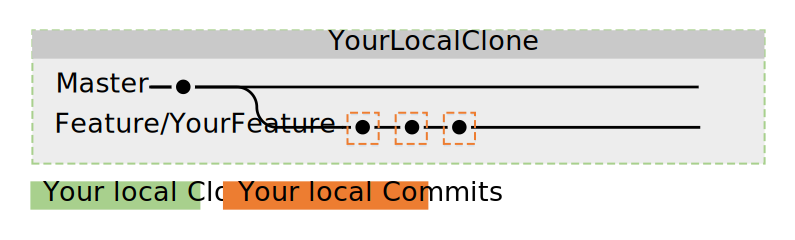

Comment utiliser Git(Hub)¶
Si vous voulez aider l’équipe de Sponge, vous avez un ajout complément génial à l’API, ou vous voulez améliorer nos Docs, alors vous aurez besoin de vous familiariser avec git et GitHub. Si vous êtes déjà familier avec les forks, branches, issues, pull-requests et commits, ignorez simplement cette rubrique. Si vous n’avez aucune idée de ce dont nous parlons, alors lisez la suite.
Note
Ce guide suppose que vous avez lu Installer Git et que vous avez un client Git sur votre machine.
Le Concept de Base de Git et GitHub¶
Git permet à de nombreux développeurs différents de développer une seule partie de logiciel en même temps. GitHub est un site où les développeurs peuvent collaborer et partager leur travail avec les autres. GitHub repose sur Git.
Astuce
Si vous n’êtes pas familier avec le vocabulaire de Git et GitHub, jetez un œil à la page glossaire sur Github.

In this case the repo is named SpongePowered, has two branches named master and
feature 1 and also some commits on both branches.
Let’s put these terms into context - beginning with the repository. The repository (short: repo) is the place where a project stores its files. The SpongePowered repositories are located at GitHub. However, this repo has some access restrictions to preserve it from unwanted or malicious changes. You can’t simply make changes yourself, as the repo is read-only for regular users. Now you may wonder how you’re supposed to file proposals and changes. Well, that’s where forks come into play. You can grab a copy of the SpongePowered repos, and make your changes there. When you’re done, you open it as a pull request (PR) on our repository. Your proposed additions and changes can then be reviewed, and staff will tell you if something is wrong, or needs improvement, and eventually merge the final PR.
Here’s a short summary of the procedure described above, before we go into detail:
- Fork the repo of your choice
- Clone it to your local machine
- Create a new branch
- Make the desired changes
- Test if everything works
- Commit the changes
- Sync them to GitHub
- Propose the changes in a PR to the SpongePowered Repo
- Amend to your PR if necessary
- Your PR gets pulled into master by staff
Details please!¶
1. Forking a Repo¶
Note
This step is only required if you don’t have push rights on the repo you’re making changes to. If you’re working on
your own repo, no fork is required. Just skip this step and clone directly. If you’re making changes to Sponge
and you aren’t staff, this step is required.
Now that you know the basic concept, we’ll discuss the details. First you need to fork the repository you want to
make changes to. This can be done on GitHub.com, where you’ll find a Fork button at the top of the repositories page.
After pressing it, GitHub will do some work and present a clone of the original repo to you. You’ll notice that the
clone is now located at YourGitHubAccount/ClonedRepoName. Alright, first step completed.
Note
All branches from the original repository will get forked too, you recieve an exact clone of the forked repo.

2. Cloning the Fork to Your local Machine¶
Now you need to get this fork to your local machine to make your changes. Open the Git Client of your choice
(Installer Git) and clone your fork to your local machine. The client will ask you for a folder to store
everything in. Second step finished, well done!
Note
Most steps can be done via GUI of your choice. If you’re experienced with a command line interface, then you can use it too. Each steps will show you the required commands to achieve the desired result.
Alternatively you can do this via CLI (command line interface, CMD or powershell on windows). Note
that you need to create the folder everything is getting cloned to yourself before typing this command:
git clone git://github.com/YourGitHubAccount/ClonedRepoName.git

3. Creating a New Branch¶
Now that you have a local clone of your fork, it’s time to create a branch to work on. Branches were designed to be able
to develop and test different features or additions at the same time, without causing problems and errors due to
interferences of the additions. It’s strongly advised that you don’t make your changes on the master branch.
Instead, create a new branch yourself (with a sensible name) and make the changes there.
This implies that we need to create a branch first, so let’s go! You can do this via your client (there
should be a create branch button somewhere), or you can use the CLI with git:
git checkout -b [name_of_your_new_branch]
This will create a branch with the name of your choice and switch to it. All changes you’re about to make will be
on this branch. If you need to switch to another branch ( for example master), just reuse this command. Third step
done! Good job so far! To get an overview of your branches, just have a look at your git client or use:
git branch

Now it’s time to make your changes. Use the editor or IDE of your choice to do this.
4. Test if Your Changes Work¶
For SpongeAPI and the implementations you have to run gradle compileJava. Proceed to the next step if it finishes
without errors. If it doesn’t, make the appropriate corrections and try again.
For SpongeDocs you can just submit your PR. It will get built automatically and reveal possible errors. Another option is to build the Docs locally. Have a look at the Readme.md on the Docs for further instructions.
5. Commit the Changes¶
When you’re done, you need to bundle them into a single package (a commit) and get them into the branch. Again your
git client will help you out. Add a meaningful name to your commit and a short description if needed. This can be done
via CLI too:
First collect all files and folders you want to put into a commit:
git add <file>
git add <folder>
Now that the files are added to your list of changes you want included in the commit, just do
git commit
It will open a text window, where you can add a message if you desire. Have a look at the image below. You’ll notice that your commits are still stored locally only and not on your fork on Github.
Note
You can have multiple commits in a PR. Just go ahead and change everything you need and commit the changes. You can merge the commits onto a single commit later.
So now, the sixth step is done. Almost there!
6. Sync to GitHub¶
Now we need to get the changes to your fork on GitHub. Everything you’ve made so far is only stored locally right now. As always, you can use your git client to do this (there’s a button somewhere in your GUI), or you can do it via CLI:
git push <remote> <branch>
In this case it should be:
git push origin feature/YourFeature

7. Propose the Changes in a PR to the SpongePowered Repo¶
You can either go to your forks page on GitHub.com (there should be a notice at the top of your forks page to guide you), or you can use your GitHub client to create a pull-request. The official GitHub for Win client uses the the top right corner of the window for this.

8. Amend Your PR if Necessary¶
If we want you to make changes to your PR, then just make more commits to the branch created above. Further commits will be added to your PR automatically.
9. Your PR Gets Pulled¶
That’s it. We’re all set! Great job!
Advanced Git¶
Squashing with Rebase¶
Let’s say you have finished your additions to the repo, and let’s pretend that you made 137 commits while getting it done.
Your commit history will certainly look cluttered. It would be a shame if they were all recorded into the repo, wouldn’t it?
Too many trivial commits also clutters the project commit history. Fortunately Git has a nice tool to circumvent this, it’s
called a rebase. Rebasing can take your 137 small commits and just turn them into one big commit. Awesome, isn’t it?
Instead of reinventing the wheel, we’ll just pass you a link to a very short and easily understandable squashing tutorial:
Gitready: Squashing with Rebase
This is what it does, nicely visualized:

Setting Up a Remote¶
Naturally the original repo is the direct parent of your fork and your fork is the direct parent of your local clone. However the original repo isn’t the direct parent of your clone. This isn’t a problem in the first place, but it prevents you from updating your clone to the latest changes on the original repo. If you setup the original repo as a remote (read: “parent”) of your clone, you’ll be able to grab all changes made to this repo and apply it to your local clone. Look below to see how grabbing and updating works.

Alright. This step is done through CLI as most GUIs are missing this (rather advanced) functionality:
git remote add upstream https://github.com/ORIGINAL_OWNER/ORIGINAL_REPOSITORY.git
If you’re unsure if that worked as intended or if you want to check which remotes are currently set, you can check via:
git remote -v
the output should look like:
origin https://github.com/YOUR_USERNAME/YOUR_FORK.git (fetch)
origin https://github.com/YOUR_USERNAME/YOUR_FORK.git (push)
upstream https://github.com/ORIGINAL_OWNER/ORIGINAL_REPOSITORY.git (fetch)
upstream https://github.com/ORIGINAL_OWNER/ORIGINAL_REPOSITORY.git (push)
Note
If you see the warning fatal: The current branch YourBranchName has no upstream branch., then the branch may not be on
the upstream remote. This may happen if this is the first time you are pushing a commit for the new branch. To push the
current branch and set the remote as upstream, use git push --set-upstream origin YourBranchName.
Rebasing¶
Let’s say you made some changes to your desired branch, but in the meantime someone else updated the repo. This
means that your fork and your clone are outdated. This is not a big problem, but to avoid problems when merging your
additions later on, it’s strongly advised to rebase your changes against the latest changes on the original repo.
If you haven’t set up the remote repo yet, do it before trying to rebase.
A successfull rebase requires several steps:
1. Fetch the Changes on the Remote Repo¶
First you need to fetch the changes on the remote repository. This is (again) done via CLI:
git fetch upstream
This will add all changes from the remote upstream and put them into a temporary upstream/master branch.
2. Merge Remote Changes locally¶
Now we need to select our local master branch:
git checkout master
After that we’ll merge the changes that are included in upstream/master into our local master branch:
git merge upstream/master
Alright, this is what we’ve done so far:

3. Rebase Local Branch against Updated Master¶
Next up is rebasing the local branch you’re working in against local master. We need to switch to your working
branch (here: feature/yourfeature) and then perform a rebase. This is done via:
git checkout feature/yourfeature
git rebase master
This will rewind your branch, add the commits from master and then apply your own changes again. The result looks like this:

4. Push Everything to your Fork¶
The last thing we need to do is to push everything to the fork. If you’ve already created a PR, it will get updated automatically:
git checkout master
git push -f
git checkout feature/yourfeature
git push -f

You made it, awesome! Good job and well done and thanks for flying Rebase-Air!